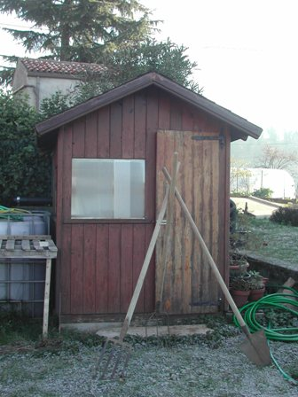

Ovvero la NON-piramide magica che suona un concerto mirabile di corrispondenze numeriche, cosmiche ed esoteriche.
Finora sembra tutto criptico, ma vedrete che è più semplice di quanto può apparire.
Vicino al mio lab c'è da tanti anni una casetta di legno, una di quelle casette in miniatura che chi ha un orto e un pezzo di prato da coltivare ci tiene gli attrezzi da lavoro.
Io ci tengo, fra le altre cose, anche una vanga e un forcone (più tardi si capirà la fondamentale importanza di questi due oggetti).
Per inquadrare esattamente il discorso che andrò a fare occorre precisare quanto segue:
la larghezza di questo "mini-edificio" è 156 cm
la sua lunghezza è 178 cm
la sua altezza, escluso il tetto, è 167 cm
la larghezza della semifalda del tetto è 105 cm
la lunghezza della falda è 235 cm
le assicelle di rivestimento sono larghe 11 cm
l'altezza della finestra è 50 cm
il bancalino della finestra è largo 5 cm
lo spessore del bancalino della finestra è 3,5cm
l'angolo del tetto con l'orizzonte è 25 gradi
la larghezza della porta è 52 cm
l'altezza della porta è 160 cm
il numero di cardini della porta è 2
il manico della vanga misura 134 cm
il manico del forcone misura solo 128 cm
Immediatamente sotto si capirà perchè dovevo essere così pedantemente esatto e rigoroso nelle misure della casetta e degli annessi; con misure anche leggermente differenti tutto il ragionamento che segue collasserebbe impietosamente, come un big-crunch in miniatura.
Si capirà come la minima imprecisione implichi, in casi come questi, la fine della teoria intera; in parole povere un disastro.
Ma dove sta l'arcano? Dove diavolo voglio andare a parare? Di cosa sto blaterando?
Un attimo ancora e siamo arrivati.
Se si ha l'accortezza (e un po' di acume, mi si perdoni l'immodestia) di guardare non solo davanti ma anche un po' di sbieco quegli aridi numeri, osserviamo quanto segue:
-la lunghezza della falda del tetto è uguale al peso atomico dell'isotopo fissile dell'uranio (235)!
-la differenza tra la lunghezza e l'altezza corrisponde al numero di protoni del vanadio (23).
-il rapporto tra il perimetro della base e lo spessore del bancalino della finestra è incredibilmente uguale al raggio atomico del tallio! (191, in angstrom)
-sottraendo dal rapporto tra l'area del tetto ed il suo perimetro la tripla larghezza delle assicelle di rivestimento si ottiene il Volume molare standard (22,4 litri).
-la differenza tra le lunghezze del manico della vanga e quella del forcone moltiplicata per 10^23 fornisce la costante di Avogadro, numero di particelle in una mole di qualsiasi sostanza (6*10^23).
-sommando alla differenza di cui sopra l'altezza della finestra si ottiene il peso atomico del Ferro (56, elemento fondamentale sia per la vanga che per il forcone).
[- a proposito di forconi, sottraendo il numero dei cardini della porta al perimetro di base si ottiene (mi vergogno a dirlo) il numero della Bestia (666)...]
-la somma dei tre elementi: perimetro di base, perimetro del tetto e lunghezza della falda del tetto fornisce l'anno della morte di Lavoisier!
-moltiplicando il seno dell'angolo del tetto per il suo coseno, per pigreco e per l'altezza della porta si ottiene il peso molecolare dell'osmio!
-il quadrato dell'altezza della finestra espesso in cubiti ebraici antichi (dividere per 44,4) è incredibilmente vicino al punto di ebollizione dell'acetone (56)!
-associando i tre elementi fondamentali delle sostanze organiche (C-H-O) ai tre numeri decimali (466) della tangente dell'angolo del tetto otteniamo una bella molecola: C4H6O6, l'acido tartarico!
-ed infine (ma questo è banale), la differenza tra l'altezza e la larghezza della porta corrisponde alla distanza di Venere dal Sole in milioni di km.
-e, proprio per concludere in gloria, il cubo della misura delle assicelle sommato al lato della falda del tetto e alla misura del bancalino della finestra fornisce... fornisce... non ci crederete ma è vero... la data della Battaglia di Lepanto (1571)!!!
Converrete con me che è pazzesco, semplicemente pazzesco.
Ho scoperto (e ne sono sconvolto) che la mia casetta per gli attrezzi (nella quale tengo anche qualche bidone di terra concimata) è una fonte infinita di quelle notizie che possono essere espresse con un numero, cioè praticamente quasi tutto ciò che si definisce scientifico!
Dai miei bidoni di concime posso estrarre quasi tutto lo scibile cosmico, vi rendete conto?
Voglio sapere per sfizio quanti mille isomeri ha il 4,4,7,9-tetrametilpentadecano?
No problem, qualche calcoletto e li trovo.
Voglio sapere quanti erano "esattamente" i lanzichenecchi del Sacco di Roma del 1527, ma solo quelli mancini?
Nulla di più facile per la mia casetta, basta saperla prendere per il verso giusto.
Ovviamente dovrò fare più misure... il volume dei bidoni di concime... la spaziatura fra le branche del forcone... l'orientamento verso la Stella polare... eccetera, eccetera.
Numerologia, sei forte! Da oggi ti tengo e ho il Sapere Universale in tasca!

La casetta magica esoterica con alcuni attrezzi divinatori: Vanga, Forca, Forcone.
Il Rastrello, la Zappa e il Concime sono all'inteno.